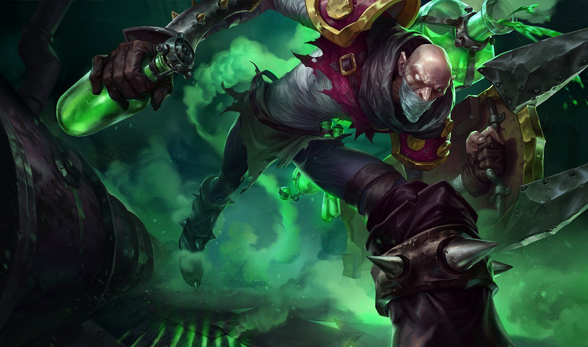

이것과..
이 아이콘이 눈에 들어왔다.
2021년 01.16 엄마가 코로나 확진자 판정을 받게되었다. 그로 인해서 나는 집에서 2주간 자가격리가 불가피하게 되었다.
엄마는 격리시설로 이동하게 되었고 형님은 형수님을 보살피러 집으로 가서 자가격리 하게 되었다.
완벽히 나 혼자서 1주일을 보낼 수 있는 시간을 갖게 되었다.
그리고 엄마가 확진자 판정을 받기 하루 전 나는 현주(전 여자친구)와 헤어졌다. 앞으로의 인생에서 계속해서 같이 할 사람이라고 생각했었다. 나도 그렇게 생각했고 현주는 더더욱 그렇게 확신하고 있었던 것 같다. 만남을 시작하기 전부터 기도와 말씀으로 생각하고 고민을 했었으며 만남을 시작하고 난 이후로는 앞으로 함께할 미래를 꿈꾸고 같이 이루어나가고 싶은 비전을 그렷었다. 그러나 그 희망사항은 이루어지지 못했다. 잠시 멈추었다고 할 수도 있을것이며 아니면 완전한 마침표일수도 있겠다. 이후로 어떻게 살아가게 될지 장래의 일은 그 누구도 모르지만, 어쨋든 내가 그림을 그리던 도중 붓이 갈라져 버린것이다.
그 이후로는 너무 지친듯 하다.
아무것도 하고 싶은 생각이 들지 않았고 아무것도 생각하고 싶지 않았다.
그냥 이 현실에서 벗어나고 지친 심신으로부터 도피하고 싶은 나의 본능만이 남아있었다.
그리고 그 본능에 충실하다보니.. 나에 눈에 보이는 것은
이것과..
이 아이콘이 눈에 들어왔다.
정말로 하루종일 게임을 했다.
아무런 생각없이 시간을 보내버렸다.
이기고 지고를 반복하면서 3~4일이 흘렀던것 같다.
게임을 하다보니 지는 것보다는 이기는 것이 기분이 좋았다.
그리고 이기기 위해서는 초반 라인전 단계에서는 어떻게 전투를 해야하며, 한타때는 어떻게 싸움을 해야하는지 전략을 짜기 시작했다.
장인 동영상들을 찾아보며 라인전에서 주도권을 가져오고 한타에서 내 몫을 다하기 위해서 조사를 하고 머리속으로 시뮬레이션을 돌렸다.
마치 당구를 처음 시작할때 자기전 머리속에 당구다이가 그려지고 길이 그려지는 듯한 느낌이었다.
결국 나는 생각을 하고 싶지 않았던 것이 아니라 그저 도피를 하고 싶었던 것이었다.
그리고 한가지 결심을 했다. 이왕 하는 거 목표를 잡고 해보자! 라고 생각했다.
그렇다면 어떤 목표를 잡는것이 적당할까?
플래티넘(platinum)이라고 생각했다.
이유는 첫번째로 18년 당시 플레티넘을 찍었던 적이 있다.
참고로 당시는 '신지드'라는 챔피언으로 플레티넘에 도달했었다.
(탑에 상주하는 대표적인 빡빡이다...)
두번째는 그냥 플레티넘 정도는 찍고 싶었다.
어느 게임을 해도 중간 이상은 하는 내가 플레티넘은 찍어야 하지 않겠나 라는 생각이 있었다.
그런데 이번에 조사를 하면서 알게된건 플레티넘이라는 티어가 결코 낮은 단계가 아니었다.
상위 9%로, 수능으로 따지자면 2등급 안이라고 생각하니 노력이 필요하겠구나 라는 생각이 들었다.
다른 이야기이지만 또한 생활코딩 수업을 따라가던 도중 선생님이 강의 듣는것을 멈추고 좌절감을 느껴보라고 권면했다. 공부가 공부를 위한 것이 아닌 내가 하고 싶은 것을 하던 도중 좌절감을 만나고 그 좌절감으로부터 구원해주는 공부는 재미가 있을것이라고... 언제부턴가 공부를 하는 나는 공부를 위한 공부를 해왔었던것 같다. 특별히 경제학이라는 학문에 있어서 그래서 어느 순간 재미가 없어지고 흥미를 잃어감에 따라 집중력도 사라졌었다. 그런데 터키에서 터키어를 공부할떄는 정말 재미있게 공부했었던 기억이 난다. 현지인과 대화를 하는데 들리지 않으니 좌절감을 바로 맛보게 된다. 그 날밤 오늘 들었던 단어와 문장들을 모두 적어서 다음날 학원 수업시간에 선생님한테 물어보는게 일상이 되었다. 그게 힘들거나 지루하다는 생각은 전혀 들지 않았고 오히려 하나하나 알아가고 습득해가는 과정이 재미있었다. 코딩도 또 하나의 언어를 배우는 것이다. 영어처럼 하지 않고 터키어처럼 배우고 싶어서 강의를 잠시 멈추고 나의 웹 페이지를 만들기 시작한것이다. 나에게 어서 좌절감을 안겨다 주고 다음 강의가 기다려지는 재미있는 공부가 되기를 바란다.